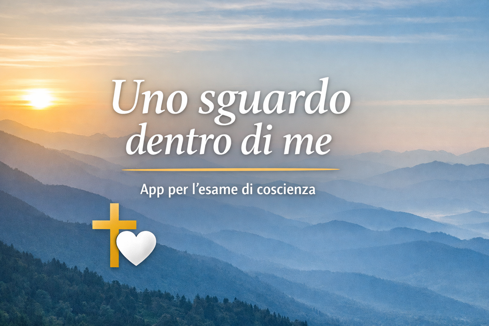

Una semplice app gratuita per prepararsi alla confessione con un esame di coscienza personale
Uno sguardo dentro di me è il nome di una piccola app web pensata per accompagnare l’esame di coscienza con uno stile sobrio, accessibile e orientato alla misericordia.
Non sostituisce la confessione e non pretende di farlo. Offre un aiuto discreto per fermarsi, rileggere la propria vita con sincerità e arrivare al sacramento della riconciliazione con maggiore chiarezza interiore.

L’app propone un breve percorso guidato con domande essenziali, un passaggio finale sul proposito concreto, un invito concreto di conversione e un promemoria essenziale per prepararsi alla confessione. Tutto resta sul dispositivo della persona.
Dopo una schermata iniziale essenziale, la persona sceglie subito fra due bottoni dedicati a giovani e adulti, risponde alle domande, può anche tornare alla domanda precedente, formula un piccolo proposito e ottiene un promemoria da rileggere, copiare, salvare o stampare.
Molte persone fanno fatica a confessarsi per imbarazzo, confusione o scarsa abitudine all’esame di coscienza. Questa pagina e questa app vogliono offrire un aiuto umile, concreto e rispettoso della libertà personale.